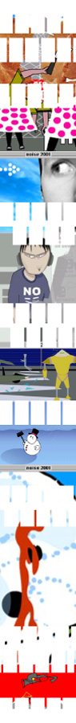

| |
noise: YOUR POUND OF FLASH
| |
What do you do upon visiting a new site when given the option to watch a fancy opening Flash sequence or click 'skip intro'? One guesses that most of us would do the latter, especially if the quality of the Flash design is not the reason we came to the site in the first place, but rather to get a particular service or to glean information.
| |
Many practical Flash animators have learned their lesson though, finding new ways to embed their moving art within simpler web designs and adding new subtle dimensions to the page.
Others, like most of the Flash artists on display for noise, create works for their own sites that double as fun, interactive viewing spaces and slick portfolios.
Seeing a need to present this overabundance of talent, noise's Flash festival was an invitation for young people to submit stand-alone Flash animation stories between 30 seconds and 3 minutes in length.
The results are an eclectic, innovative and exciting range of pieces that highlight new and previously unseen directions in illustration, animation, design and cartooning - they'll be profiled online at noise.net.au throughout October.
"Flash animation is such an exciting new form of artistic expression because it requires talent in design, audio, movement and a head for technical manipulation," says noise Online Producer Millie Lawson. "Because of this and the relatively new understanding of this type of media, we've got a really diverse range of works."
Mostly created using Macromedia's Flash 5, our Flashists went nuts with the variety of their submissions. Mark Eiden's "Meat Heads" follows the adventures of two security guards, created by animating a couple of steaks, while there are artists like David Read who use the medium to communicate powerful social messages.
Some created small, humorous Flash vignettes, like Belinda Keillor's "Sheepypoo" or Kieran Ots' "Springtime", and the heavily illustrative "Dragon and the Rat". Well worth checking out too is Kaho Cheung's "Mean Man Moe" (TV-style character-based series) and Jarrod Cope's fun and relatively simple "Alfonso".
The noise site is a fun park for Flash Animators throughout October. If you still want to click 'skip intro', rest assured you can find full animator and designer profiles on our site too, including links to artist's sites where available. Now go and get Flashed.
Return to the FLASH ANIMATIONS Project Homepage
(Psst... we reckon you'll also be interested in the E-WORKS,ABC TV and ONLINE GALLERY Projects)
|
|
|